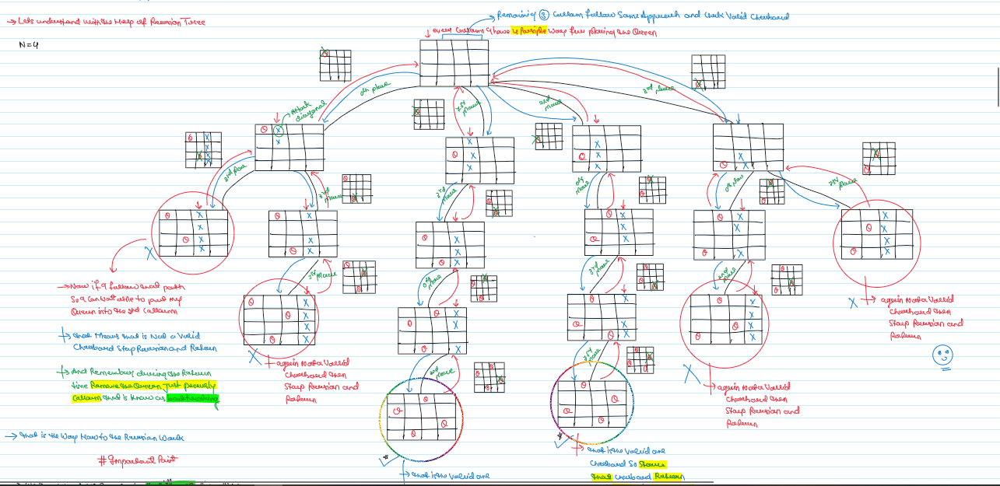
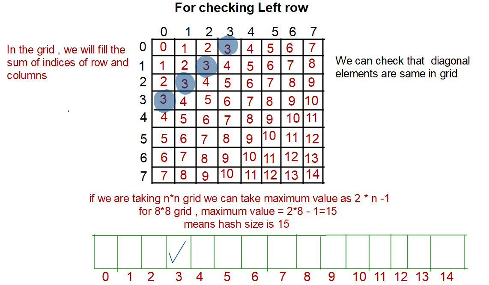
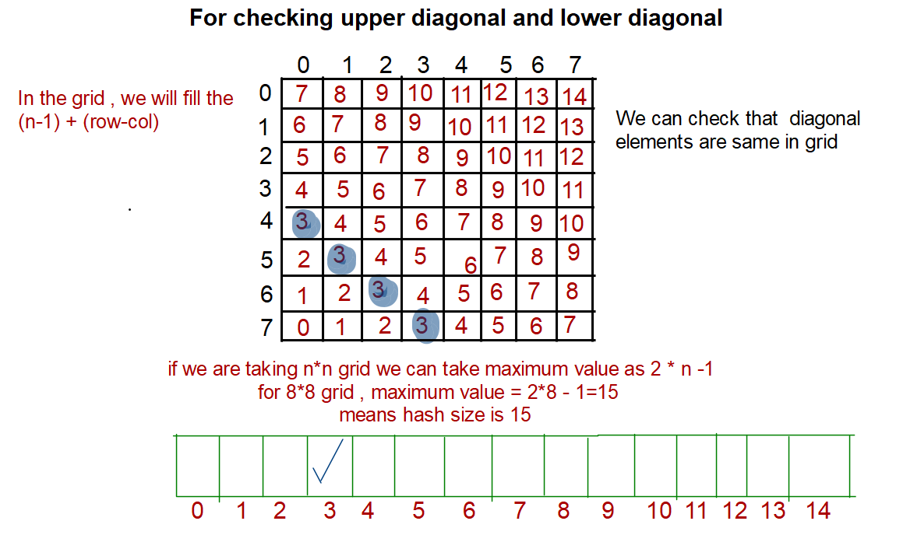

JB TAK FODEGA NHI .... TB TK CHODEGA NHI .... (MAANG)


L16 N-Queens I
The n-queens puzzle is the problem of placing n queens on an n x n chessboard such that no two queens attack each other.
Given an integer n, return all distinct solutions to the n-queens puzzle. You may return the answer in any order.
Each solution contains a distinct board configuration of the n-queens' placement, where 'Q' and '.' both indicate a queen and an empty space, respectively.

Example 1:
Input: n = 4
Output: [[".Q..","...Q","Q...","..Q."],["..Q.","Q...","...Q",".Q.."]]
Explanation: There exist two distinct solutions to the 4-queens puzzle as shown above
Example 2:
Input: n = 1
Output: [["Q"]]
Constraints:
- 1 <= 9
Notes
Note: Zoom for Better Understanding
Recursion Tree

Code Zone!
.png)
.png)
Sb Mai He Kru ...
Khud Bhi Kr le Khuch ..... Nalayk
Time Complexity:N! x N
Reason:Exponential in nature, since we are trying out all ways. To be precise it goes as O
(N! * N) nearly.
Space Complexity: O(N^2)
O(N) for the my ans DS and O(N) for the Recursive Stack Space.
This is the optimization of the issafe function. In the previous issafe function, we need o(N) for a row, o(N) for the column, and o(N) for the diagonal. Here, we will use hashing to maintain a list to check whether that position can be the right one or not.
For checking Left row elements  For checking upper diagonal and lower diagonal Code Zone!
.png)
.png)
Sb Mai He Kru ...
Khud Bhi Kr le Khuch ..... Nalayk
Time Complexity:N! x N
Reason:Exponential in nature, since we are trying out all ways. To be precise it goes as O
(N! * N) nearly.
Space Complexity: O(N)
O(N) for the Recursive Stack Space.